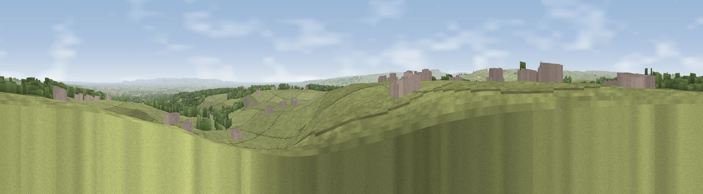

Viewpoint near Hudswell
#5271 in England · top 3% of its area beats it · near HudswellWhere it is
The exact computed spot (NZ 14500 02575). Click the marker for map links.
The view, rendered

A 360° render of this exact spot computed from the terrain model, tree cover and land cover — summer colours, afternoon light, calibrated against photographs of famous viewpoints. Real trees, hedges and buildings will differ in detail.
The panorama
Grey silhouette: terrain skyline in each direction (720 bearings, Earth curvature and refraction included). Dashed green: skyline with trees (+15 m) and buildings (+8 m) as obstacles. Blue strip: how far the ground is visible on each bearing.
Where the view opens
Wedge length = distance to the farthest visible ground on that bearing (vegetation-aware). Rings at 10, 25 and 50 km.
What fills the view
74% grassland · 16% woodland · 8% cropland · 1% built-up
Angular shares of the visible panorama (visual magnitude), not map area. Landscape diversity 0.34 (0–1 Shannon).
Key numbers
More beautiful places nearby
The staircase of upgrades: each row has a higher view potential than everything closer. Driving times are estimates from straight-line distance, calibrated against real road routing — check an actual route before setting out.
| Place | Direction | Drive | Score |
|---|---|---|---|
| Viewpoint near Gilling West | NE · 2 km | ~6 min | 70.3 |
| Viewpoint near Gilling West | NE · 3 km | ~7 min | 71.9 |
| Viewpoint near Barningham | WNW · 12 km | ~22 min | 72.7 |
| Viewpoint near Barningham | WNW · 12 km | ~23 min | 74.1 |
| Viewpoint near East Witton | S · 17 km | ~30 min | 74.4 |
| Viewpoint near East Witton | S · 18 km | ~31 min | 77.8 |
| Viewpoint near Ingleby Cross | E · 31 km | ~49 min | 78.8 |
| Beacon Hill | E · 32 km | ~49 min | 84.7 |
54.41841, -1.77806 · source: screening · position refined by local search. Computed location — check access rights before visiting.